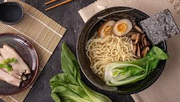

Japanese Ramen

Description
Shio Ramen (or Salt-Flavored Ramen) is one of the most popular styles of ramen in Japan!
Toothsome noodles are nestled in a base of dashi and clear chicken broth and topped with seasoned bamboo shoots,
sliced chicken chashu, and jammy ramen eggs. It’s a bowlful of comfort and soul!
This authentic and straightforward recipe is proof that you can enjoy restaurant-quality ramen at home.
Ingredients
For the dashi (Japanese soup stock)
- 3000ml water
- 20g kombu
- 20g dried shiitake mushrooms
- 20g dried anchovies
For the ramen broth
- 680g ground chicken
- 1 knob ginger
- garlic
- 1 Tokyo negi or green onions
- 20g dried bonito flakes
For the shio tare
- 120ml sake
- 2 Tbsp mirin
- 2 tsp soy sauce
- 1/4 tsp fish sauce
- 4 Tbsp salt
- 5g dried bonito flakes
For the aromatic oil
- chicken skin (from the breas)
- Tokyo negi
Ramen toppings
- Ramen Eggs
- menma (seasoned bamboo shoot)
- chopped scallions
Steps